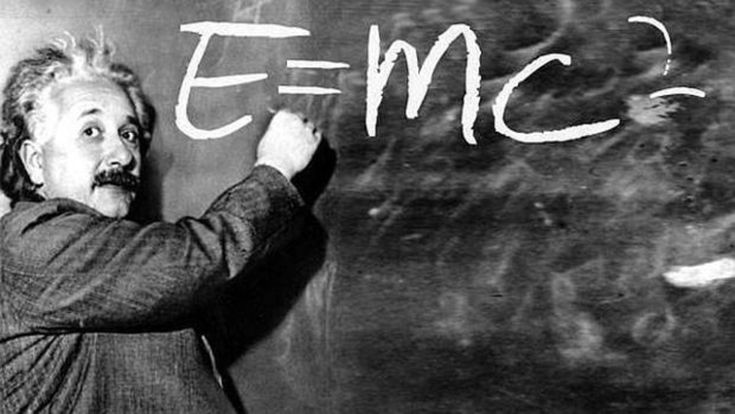

Teoria Relativității Generalizate
Teoria relativității restrânse explică fenomenele ondulatorii, eliminând acțiunea instantanee de la distanță. Electrodinamica lui Faraday și Maxwell este compatibilă cu viteza finită de propagare a luminii. Prin generalizarea legilor mecanicii newtoniene și a unor legi ale fizicii, electrodinamica devine relativistă. Dar pentru a pune gravitația in concordanță cu relativitatea a fost nevoie de modificări mult mai profunde ceea ce l-a condus pe Einstein la Teoria relativității generalizate. În această teorie, orice viteză de propagare, inclusiv a gravitației, este finită. Teoria Relativității Generalizate, asociază timpului spațiul legând coordonatele evenimentelor de timp și sudându-le în mod unitar, iar gravitația devine o proprietate a acestui reper spațiu-timp, devenind de fapt o deformare a spațiului și a timpului.
Einstein nu desființează concepția newtoniană, ci o înlocuiește cu una mai extinsă, valabilă pentru viteze apropiate de cea a luminii.
Teoria Relativității Generalizate a revoluționat gândirea științifică prin negarea existenței unui timp absolut, stârnind un ecou uriaș în toată lumea, fiind discutată în contradictoriu în cele mai prestigioase centre științifice ca și în cercuri mondene sau în săli de conferințe pentru marele public. A fost combătută cu vehemență de unii, dându-se dovadă de cunoaștere superficială. Epoca ce a urmat a fost marcată de interesul pentru această teorie, considerată ca răsturnătoare a tuturor legilor mișcărilor și fenomenelor fizice admise ca fundamentale.